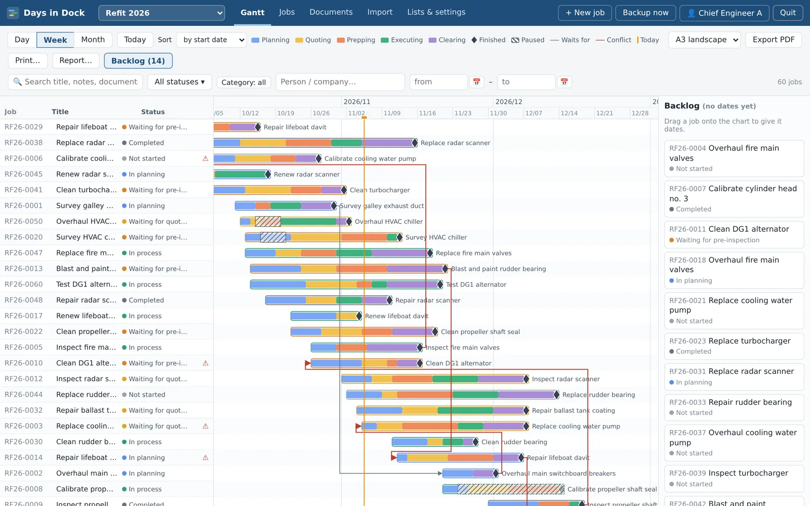
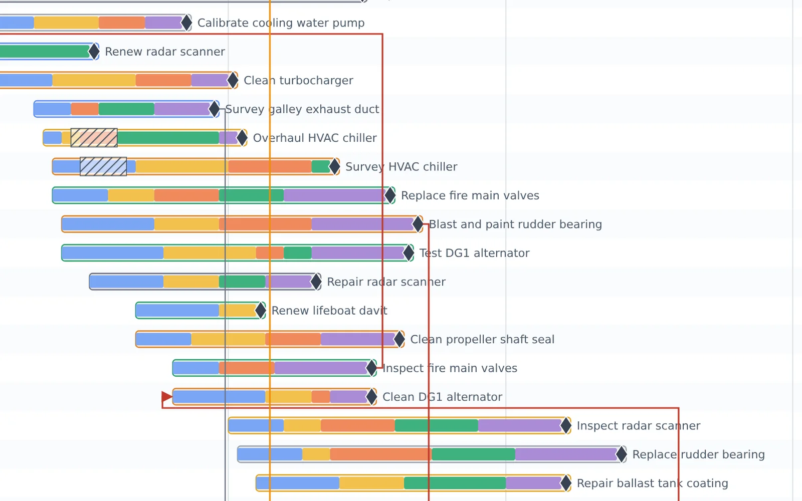
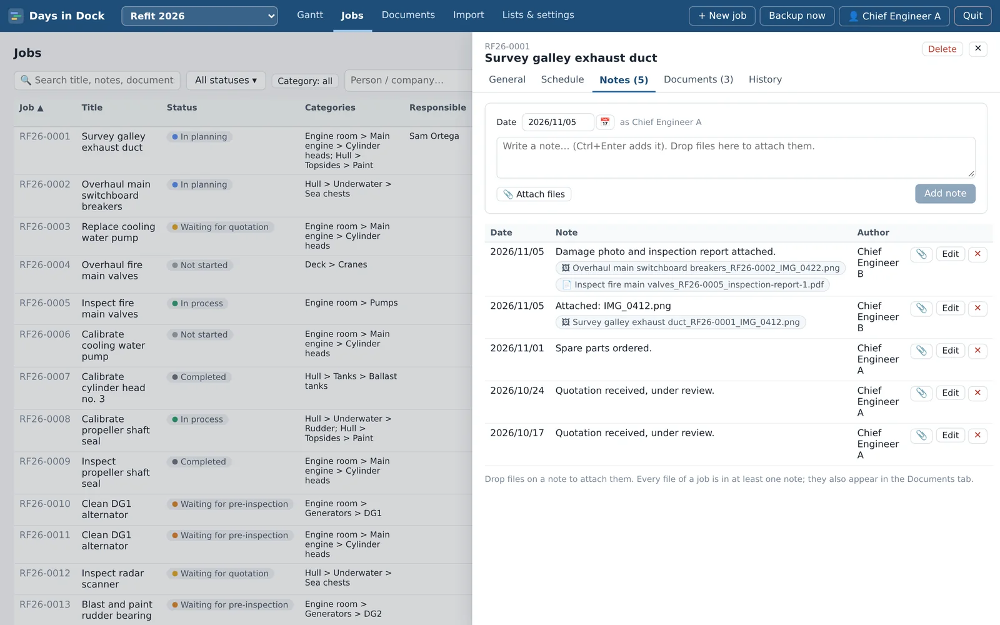
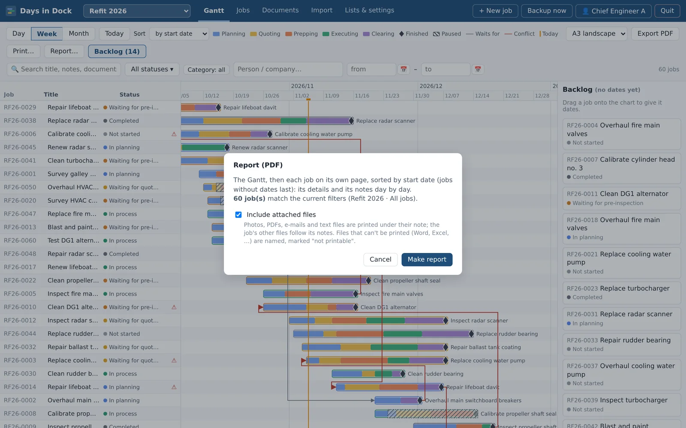
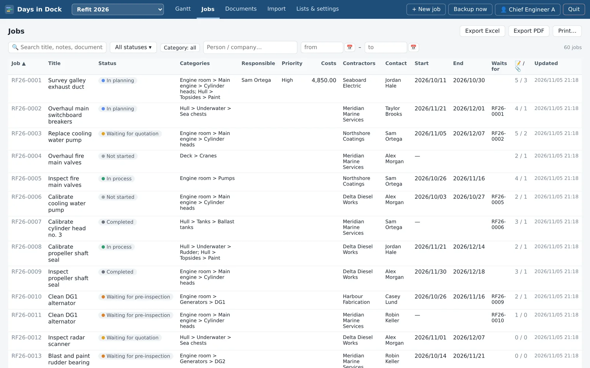

Several projects
One project per boat or per yard period, each with its own job numbers and category tree. Carry the unfinished jobs over to the next period; archive finished projects as a read-only record.
Days in Dock Desktop Version is the job tracker and Gantt chart for the people who run a refit: every job with its people, dates, notes, photos, quotes and e-mails, on your own computer — and a clean PDF report whenever someone asks where things stand.

From the first work list to the last sign-off: plan it, follow it day by day, and report on it.
Day, week or month view with a line for today. Each job shows its phases — planning, quoting, prepping, executing, clearing — its pauses and its finish milestone.

A dated log for each job, with who wrote what and when. Drop photos, PDFs, quotes and e-mails on a note and they're filed with it, named after the job so they stay findable.

One click makes a PDF of the jobs you filtered: the Gantt first, then every job on its own page with its details and its notes day by day.

A sortable job list with the same filters as the Gantt: text (titles, notes and document names), status, category, person or company, and dates. Filters are remembered for each user.

One project per boat or per yard period, each with its own job numbers and category tree. Carry the unfinished jobs over to the next period; archive finished projects as a read-only record.
Turn on phone access and pair a phone with a QR code. On deck, open the job, take photos or pick a video and they're attached to the note, straight into the computer — over your own Wi-Fi, in the phone's web browser, no app needed. The connection is encrypted; a simpler unencrypted mode is there for company phones that can't install the certificate.
Each person signs in with their own name, so every change is recorded with who made it. Admins manage users, settings and backups; members do everything else.
Backups are made by themselves at start, at exit and daily, whenever something changed. The app keeps every backup of the last 7 days, then one per week for 4 weeks and one per month for 4 months. Restore any of them — the current state is saved first, so a restore can be undone too. Export everything to one file for a USB stick.
Days in Dock for iPhone and Android is a separate app that keeps its own projects on the phone. It doesn't sync with the desktop version: each keeps its own data.
Programs and scripts that arrive attached to a job are kept but never opened by the app, and large files and a nearly full disk are caught before they cause trouble.
Keep the yard period under control, show the owner a report instead of a long phone call, and hand over a complete record at the end.
One project per boat or per period, with the same people, statuses and phases across all of them.
Plan the work, track what waits for what, and keep the photos and quotes with the job they belong to.
The desktop version has no server and makes no internet connections. Your jobs, notes, files and backups are stored in the app's folder on your computer, and leave it only when you copy, export or print them yourself. Phone access is off until you turn it on, and then works only inside your own network. Read the privacy policy.
Windows 10 and 11, 64-bit. A portable folder: nothing to install, no admin rights needed.
For Mac computers.
For 64-bit Linux desktops.
Requirements: Google Chrome installed (the app opens in its own Chrome window), about 40 MB plus room for your documents and backups. Questions? Write to support@freeboard.boats.